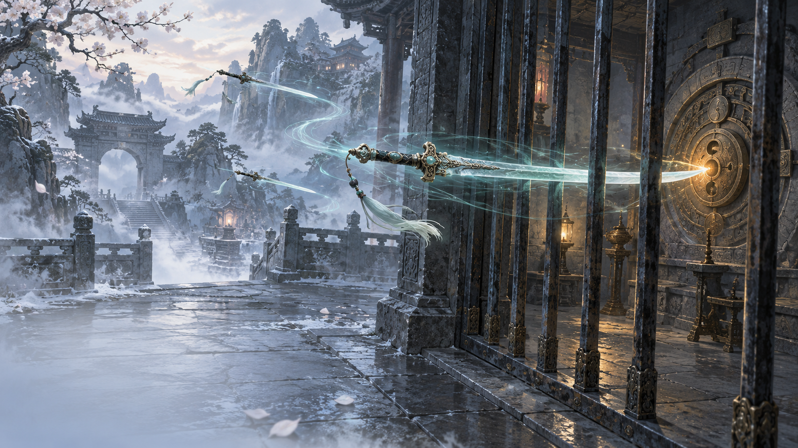

PERSONAL PROTOTYPE · UNITY
个人 Demo玉剑传说

JADE SWORDAI 概念插画
御剑，亦是探索。战斗操作 · 关卡机关
Tab 进入御剑鼠标 · 平面移动双键 · 高度控制
从一柄飞剑的操作，延伸到一段关卡的推进。
让玩家亲手掌控飞剑，
连接战斗与机关。
01 / 控制取舍
角色能移动，飞剑也能操控。
我把飞剑当成另一个可操控的“角色”。进入御剑后，镜头拉高、拉远并固定跟随，释放鼠标控制飞剑；键盘继续负责角色移动。
02 / 操作分工
鼠标控制方向，按键控制高度。
鼠标提供类似摇杆的平面移动。为拓展单一水平面的操作空间，再用两个按键独立控制飞剑上升与下降。
03 / 主题延伸
把御剑用到关卡里。
近战积累资源，技能消耗资源。飞剑也用于击打栏杆后的机关，从直接看见目标，到寻找角度，再到借助镜面观察死角。